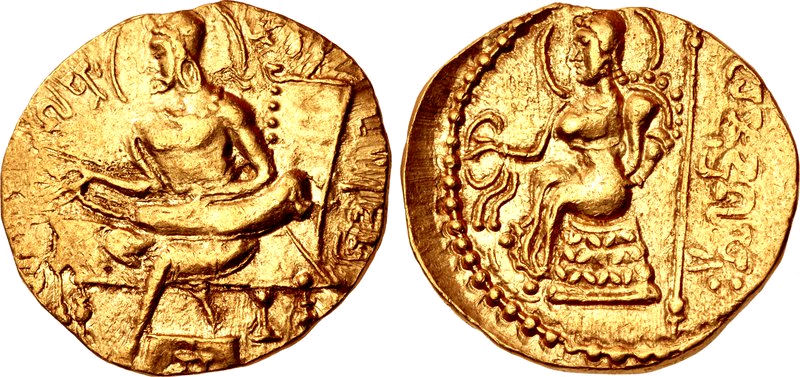
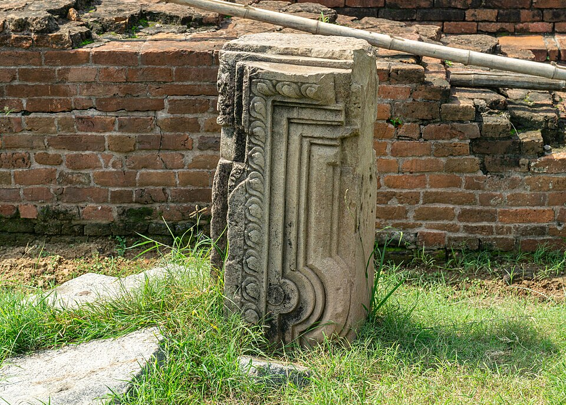
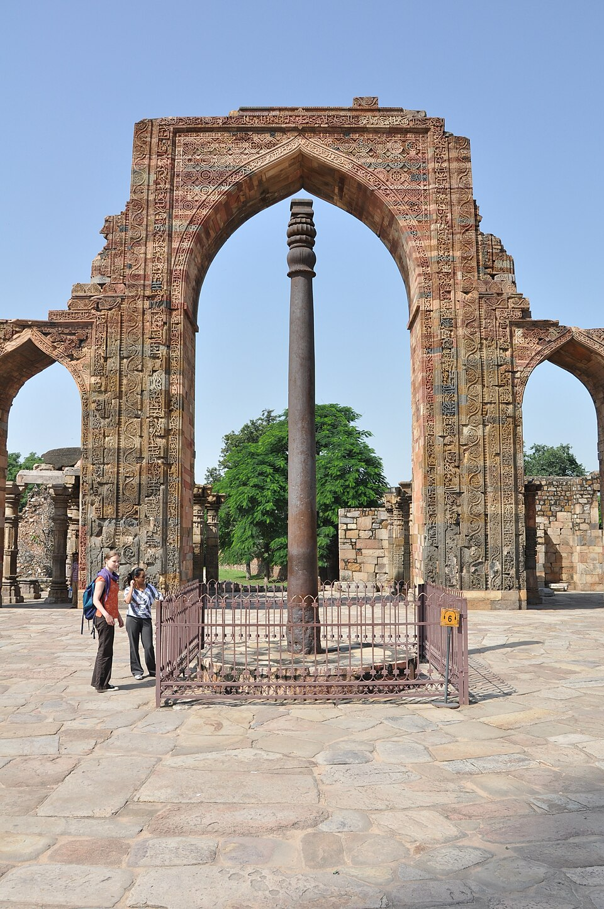
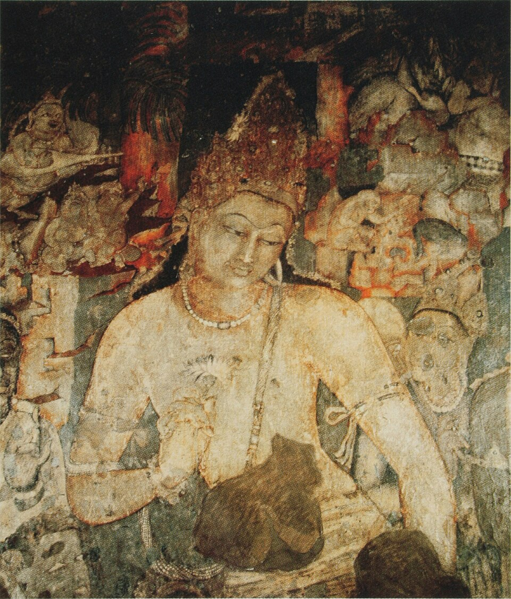

Image Viewer
Full Archaeological & Numismatic Inspection
100%
Regarded in Indian historiography as the Classical Golden Age, the Gupta Period produced unmatched summits in mathematics, astronomy, Sanskrit drama, fine arts, and international monastic learning. Following the Gupta decline, Emperor Harshavardhana unified northern India from Kannauj, patronizing Banabhatta and the famed pilgrim Hiuen Tsang.

Authentic numismatic testament proving the emperor's patronage of the fine arts and music.
Lucent GK essentials covering all key sovereigns from Chandragupta I to Skandagupta.
Real founder of the Gupta Empire. Ascended the throne in 319–320 AD, starting the celebrated Gupta Era.
Dubbed the "Indian Napoleon" by historian V.A. Smith due to his unblemished military campaigns across north and south India.
Eliminated the last Saka ruler Rudrasimha III, annexing Gujarat/Kathiawar and assuming the titles Sakari and Vikramaditya.
Maintained peace across the subcontinental empire. Ardent devotee of Lord Kartikeya; issued distinctive peacock-type gold coins.
Founded the world-famous Buddhist university of Nalanda in Bihar, attracting scholars from China, Korea, Tibet, and Central Asia.
The savior of India who successfully repulsed the catastrophic invasion of the barbaric White Hunas (Hephthalites).
Records the comprehensive restoration of the Sudarshana Lake dam in Saurashtra by his governor Parnadatta and son Chakrapalita.
The Eran Stone Pillar Inscription (510 AD) of King Bhanugupta in Madhya Pradesh provides the earliest epigraphical evidence of Sati (widow self-immolation of Goparaja’s wife).
Toramana and his ruthless son Mihirakula overran Malwa and Punjab, precipitating the Gupta collapse.
Core Lucent GK table of scientific breakthroughs and literary masterpieces for UPSC/APSC prelims.
Authored Aryabhatiya (at age 23 in 499 AD) and Surya Siddhanta.
One of the Navaratnas; legendary polymath in astronomy, astrology, and architecture.
Brahmagupta authored the Brahmasphuta Siddhanta and anticipated gravitational laws.
| Author / Luminary | Immortal Treatises & Plays | Genre / Theme | Lucent Prelims Key Fact |
|---|---|---|---|
| Kalidasa | Abhijnanashakuntalam, Malavikagnimitram, Vikramorvashiyam, Meghaduta, Raghuvamsha | Classical Sanskrit drama & Kavya epics | First Indian work translated to European language (Sir William Jones) |
| Visakhadatta | Mudrarakshasa • Devichandraguptam | Political drama (Chanakya's machinations / Ramagupta) | Play without a female heroine |
| Shudraka | Mrichchhakatika ("The Little Clay Cart") | Drama of Charudatta and courtesan Vasantasena | Vivid depiction of urban social realism |
| Bhasa | Svapnavasavadatta • Charudatta | Romantic drama of Udayana and Vasavadatta | Preceded Kalidasa; 13 plays discovered |
| Vishnu Sharma | Panchatantra | Fables and moral statecraft for princes | Most translated Indian book after Bible |
| Amarasimha | Amarakosha (Namalinganushasana) | Sanskrit thesaurus and lexicon | Member of Vikramaditya's Navaratnas |
Interactive archaeological relics preserving the artistic and metallurgical glory of the Guptas.

Zoom DetailFounded by Kumaragupta I; celebrated by Hiuen Tsang and I-Tsing; destroyed in 1193 AD by Bakhtiyar Khilji.

Zoom DetailErected by King Chandra (Chandragupta II); has stood rust-free in the open air for over 1,600 years.

Zoom DetailRenowned for lyrical elegance, expressive eyes, and natural mineral pigments illustrating Buddhist Jatakas.
The Gupta period marks the birth of free-standing structural stone temples in India. Key examples include: Dashavatara Temple at Deogarh (Jhansi)—the earliest surviving temple with a Shikhara and Panchayatana layout; Bhitargaon Temple (Kanpur)—built entirely of terracotta burnt bricks with an arch roof; and the stone temples at Nachna Kuthara (Parvati) and Bhumara (Shiva).
Pushyabhuti dynasty, the conflict with Pulakeshin II, Hiuen Tsang's travels, and the plays of Harsha.
Ascended the throne in 606 AD at age 16 after his brother Rajyavardhana was murdered by Shashanka of Gauda. United Thanesar and Kannauj, creating an empire spanning Punjab, UP, Bihar, and Bengal.
Harsha’s southward expansion was halted by the Western Chalukya monarch Pulakeshin II on the banks of Narmada, recorded in the Aihole Inscription (634 AD) composed by Ravikirti.
Chinese Buddhist pilgrim who spent over 15 years in India during Harsha's reign. Authored the comprehensive record Si-Yu-Ki ("Records of the Western Lands").
Court poet Banabhatta authored the first formal historical biography in Sanskrit, Harshacharita, as well as the poetic romance Kadambari.
Harsha was an accomplished playwright who authored three famous Sanskrit plays: Ratnavali, Priyadarshika, and Nagananda (depicting Jimutavahana's sacrifice).
Master every key fact on Samudragupta, Vikramaditya, Nalanda, and Harshavardhana.
Loading flashcard...
Click card to reveal answerLoading answer...
Click to flip backLoading quiz question...
Full Archaeological & Numismatic Inspection